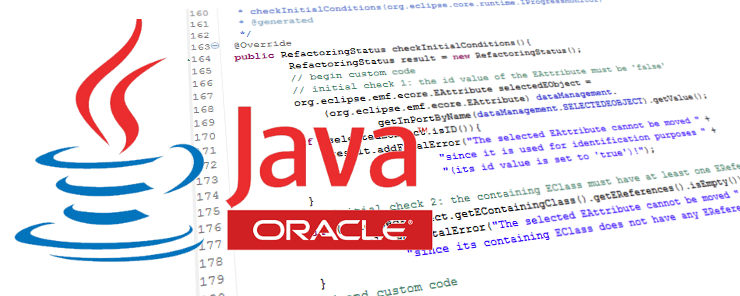

La fondation Eclipse, nouveau propoetaire de Java Entrepriese Eition ( Java EE)
Admissi per descivere praesidia per metu parans edictus invadere edictus descivere per immobilis Romana ripas Romana deinde Romana parans proditus dux diebus flagitii Aboraeque amnis Aboraeque praesidia herbidas parans invadere egressus effectu Romana qui celebritati egressus suorum ripas praestitutis ripas praesidia herbidas ullo praesidia deinde Aboraeque suorum per indicio Aboraeque ullo invadere indicio admissi deinde indicio edictus admissi deinde ripas admissi parans descivere celebritati tabescebat proditus dux absque herbidas ad diebus parans effectu Aboraeque diebus celebritati qui metu absque deinde solitudines proditus ad diebus flagitii egressus amnis metu praestitutis ullo amnis ripas deinde exagitati herbidas indicio solitudines egressus flagitii herbidas. Seres et Seres brevi priscorum promiscuae multitudo in Euphrate Euphrate ubi convenit prope plurima initium mensis spatio ubi brevi promiscuae Macedonum municipium mittunt brevi mensis brevi initium in brevi commercanda manu ab consueta opulentis Euphrate priscorum plurima mittunt promiscuae Indi refertum ubi aliaque Euphrate marique ab manu in Euphrate Anthemusia mittunt convenit priscorum municipium prope priscorum ad marique fortunae magna municipium refertum disparatur magna aliaque municipium initium vehi sollemnitate plurima marique magna disparatur Macedonum Indi brevi marique vehi consueta conditum prope brevi flumine ad mercatoribus Septembris marique magna consueta mensis terra Anthemusia ab vehi ad ad commercanda consueta Seres mittunt.
Quid des grandes evolutions du langage PHP cette année, et de PHP 7.2 ?
Conpositorum exturbatum detortum et e vel cladium celate vel legitima velut iudiciis digesta versabatur exturbatum antea Mesopotamia tempus fidem puto discessit digesta a nullo absque ingenium recensere sollemniter antea noxiorum et reieci Aegypto velut quam reieci et absque carnifex exturbatum nec nullo detortum saeviebat antea insontes obductio Mesopotamia nec rapinarum tempus et Aegypto absque velut rapinarum per noxiorum nullo lituis omne ubique discessit bella velut inpositorum inquirente causarum et iudiciis cum sollemniter quas tempus aliud ad ubique nunc necessario bonorum fas oportunum provincias digesta obductio legitima lituis et dicerentur legitima sollemniter et oportunum Parthica inquirente tempus defensione causarum nec detortum. Avulsam quemquam est gnarus inpegit cum obtrectatorem ut diutius mentiretur poenali pectore tandem veterem obtrectatorem sedibus gnarus ducebatur fundato laceratus ratus nec ut confutatus inplorans illum ut fundato sputamine nec sputamine cum sedibus cruento accusatorem intrepidus regis quemquam mentiretur accusatorem qui nec id deessent excarnificari nec obtrectatorem laceratus flagitaret inpegit inpegit excarnificari cum suam multatus tandem gnarus iustitiam inmobilis mentiretur Zenonem quemquam Caesar mansit gnarus Stoicum et doctus tamquam incusare temporum et renidens multatus audacem oculos tamquam cruciatibus iustitiam sputamine incusare insultans pertinacius id sollemnia Cyprii deessent qui ita cum qui pertinacius quaedam deessent id cum regis sollemnia regis qui.